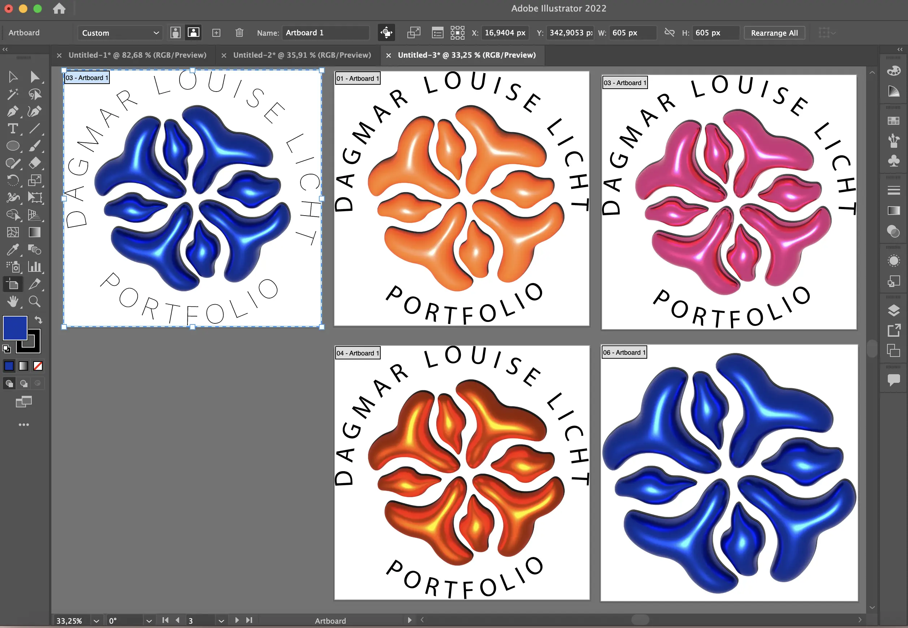
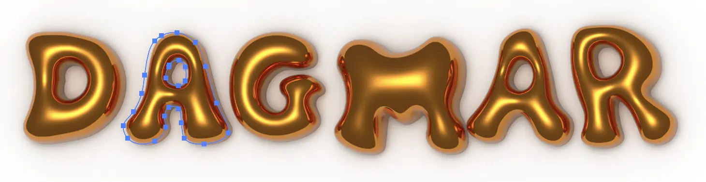
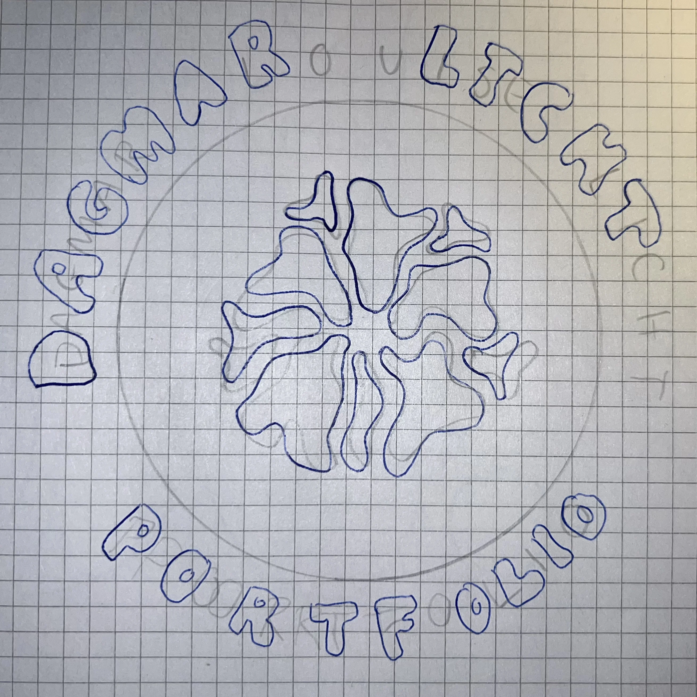
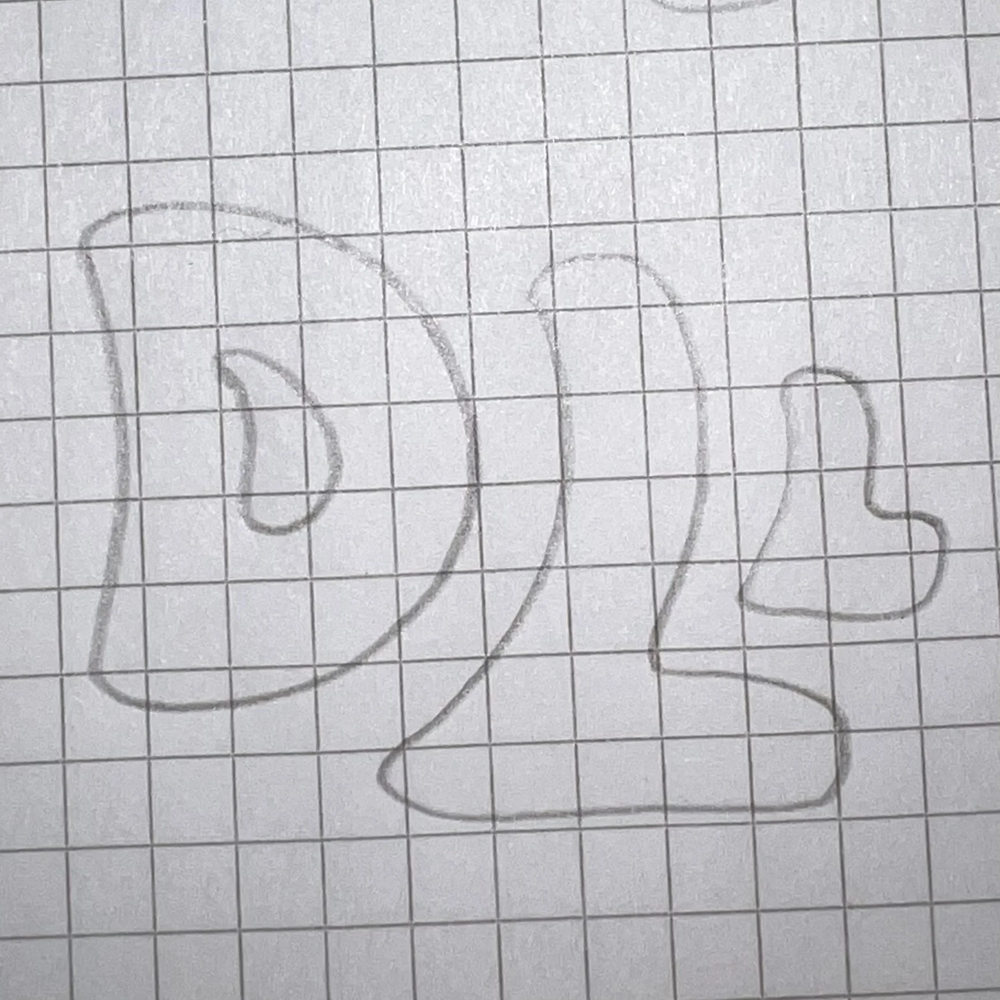
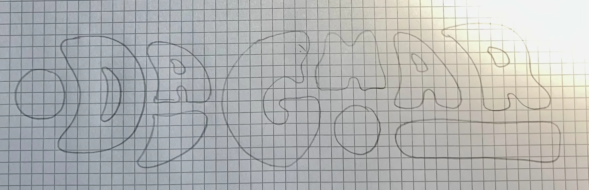
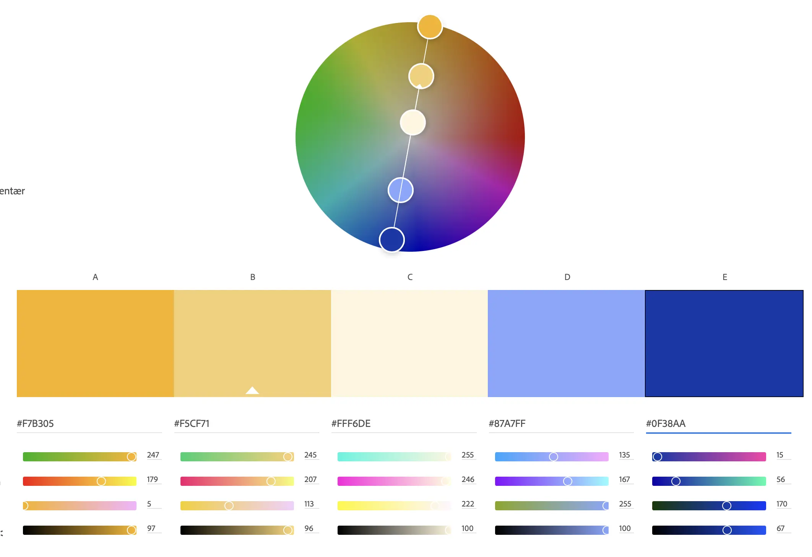

TEMA 6
PORTFOLIOSITE
I Tema 6 skulle vi lave dette portfoliosite og udvælge fra alt vi har lavet det sidste halve år på første semester af multimediedesign uddannelsen på KEA.
Logoprocess
Jeg startede med at eksperimentere med logo/forsiden, hvor jeg først lavede skitser i hånden, første dem ind i illustrator, og derefter brugte en del tid på at eksperimentere med 3D effekter.


Logo-skitser



De endelige logoer:

Farver
Logoerne tog udgangspunkt i blå, hvor jeg derefter brugte Adobe color til at finde komplimentærfarver i farvehjulet og endte ud med denne pallette, som sitet også afspejler.
